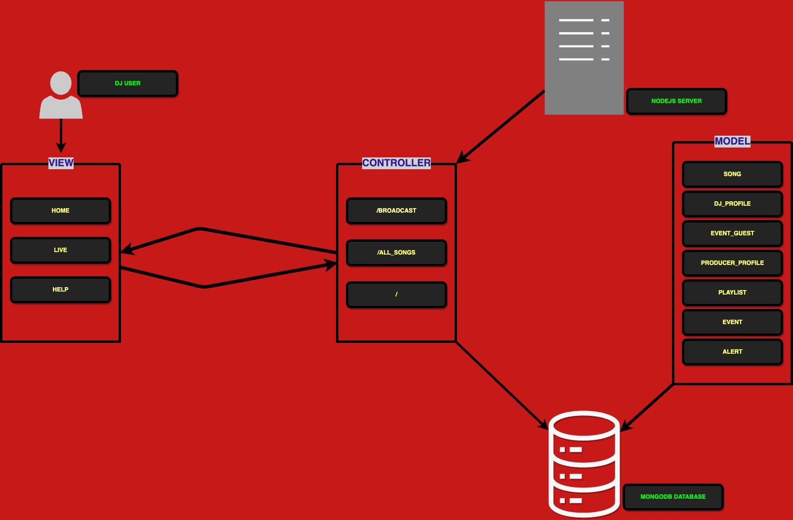
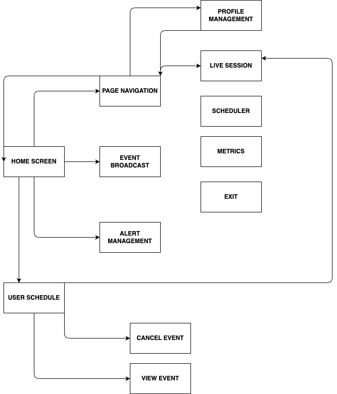
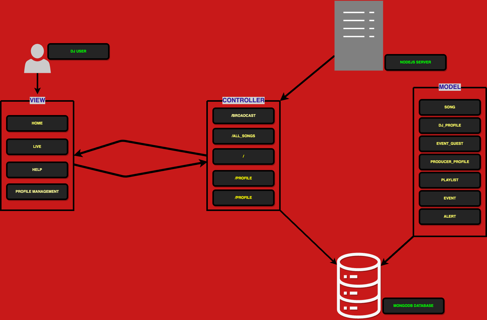
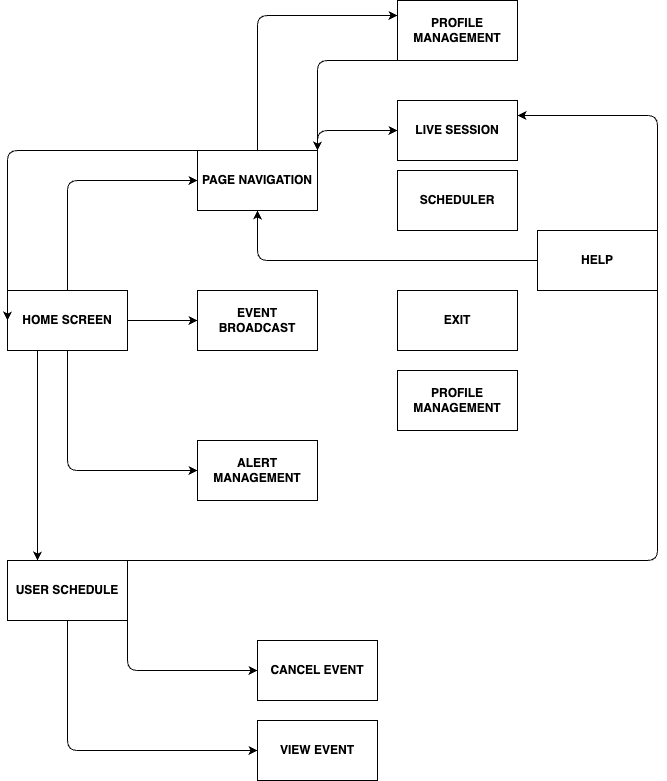

This diagram illustrates the Model-View-Controller (MVC) architecture for a Node.js application integrated with MongoDB and EJS templates. The View represents the user interface components, including EJS templates like home, live, and help, which interact directly with users, such as DJs accessing their dashboards. The Controller serves as the intermediary between the View and the Model, managing the flow of data by handling routes such as /broadcast, /all_songs, and /. It processes user inputs, retrieves or updates data from the Model, and ensures the appropriate response is delivered to the View. The Model defines the application’s data structure and interacts with the MongoDB database, managing collections such as song, dj_profile, event_guest, producer_profile, playlist, event, and alert. The Database is the MongoDB storage layer that holds all persistent data for the application, including profiles, events, playlists, and songs. The diagram highlights the separation of concerns, where user actions flow through the Controller, interact with the Model for data processing, and deliver results to the user-facing View, all handled by the Node.js server.
Points Earned: 10/10

The flowchart outlines the navigation and interaction structure for a system. It starts from the Home Screen, branching into key modules such as Page Navigation, Event Broadcast, and Alert Management. From Page Navigation, users can access modules like Profile Management, Live Session, Scheduler, Metrics, and the Exit option. The Event Broadcast section includes functionalities like Cancel Event and View Event, while the Alert Management section manages user notifications and actions. This flow ensures streamlined user interaction through clearly defined paths and functionalities.
Points Earned: 10/10


Points Earned: 10/10
Points Earned: 20/20
Points Earned: 10/10
Points Earned: 10/10
Points Earned: 10/10
2 point loss because alerts reading and clearing not fully implemented
Points Earned: 18/20
Points Earned: 10/10
Points Earned: 10/10
3 point loss because not all CRUD operations reflect on the UI but do so in the database
Points earned: 7/10
4 point loss because user cannot resume session without confirming and changes are sent to db
Points earned: 6/10
Exit button closes everything
Points earned: 9/10